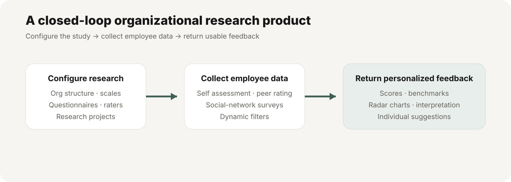
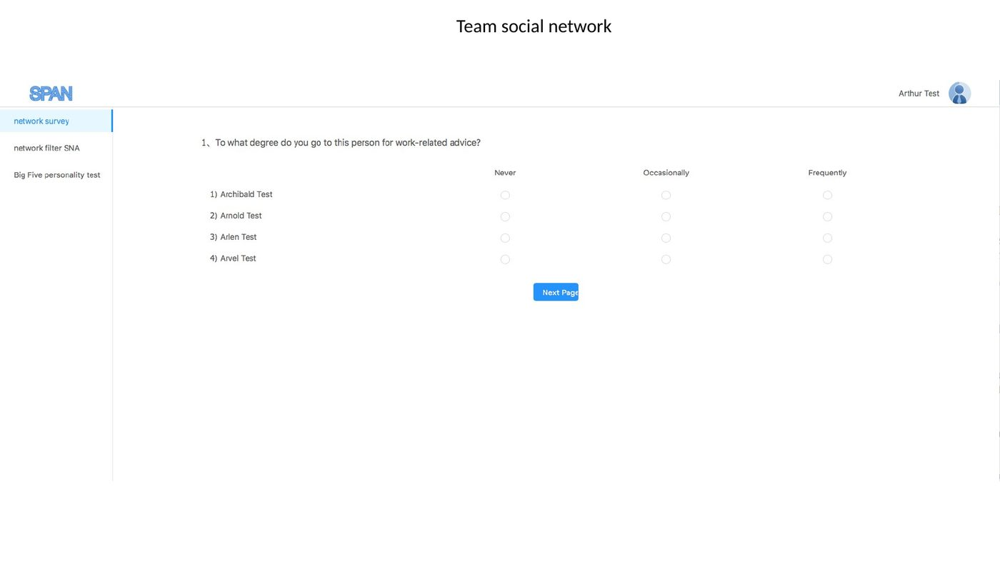
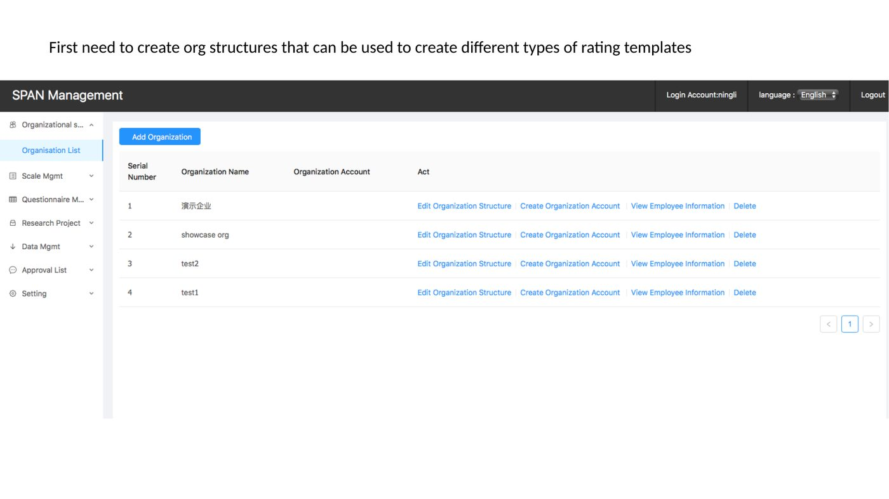
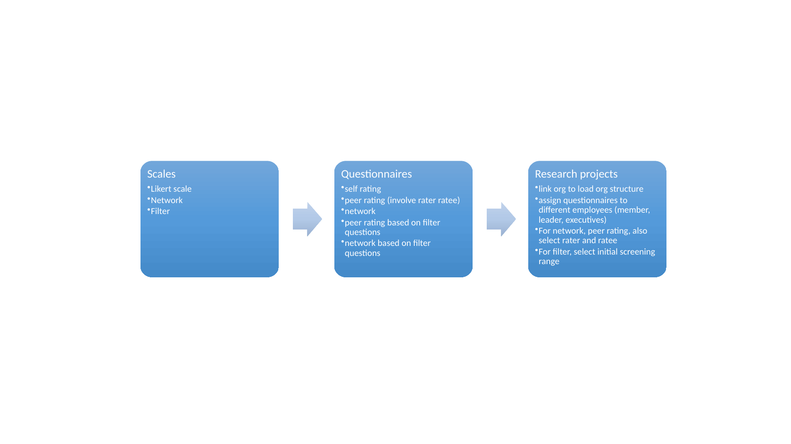
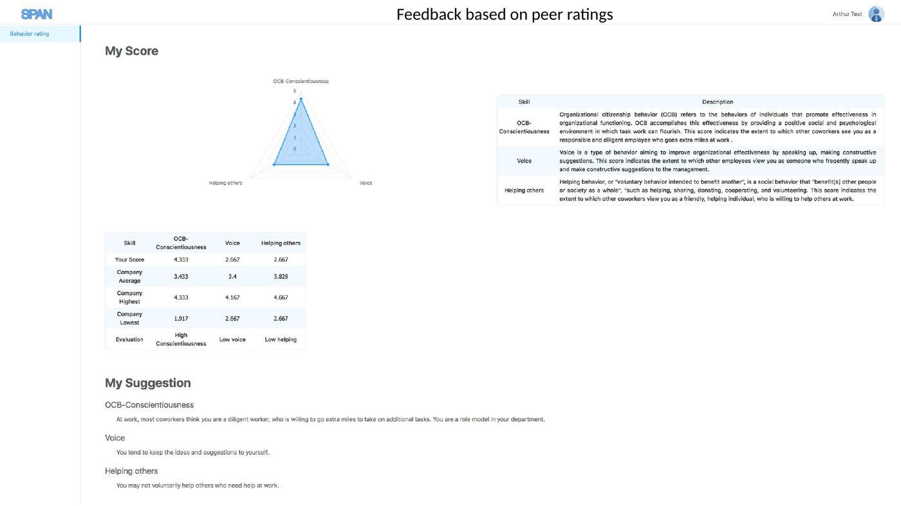

SPAN: Building a Survey Platform for Organizational Research
I co-founded SPAN to turn the specialized needs of organizational researchers into a configurable survey platform. Researchers have used it to conduct relational, organizational network, and employee studies. The platform also includes feedback workflows that translate survey responses into interpretable results.
The problem: relational research needs specialized survey workflows
Conventional questionnaires do not always support the organizational hierarchies, respondent relationships, peer nominations, and network questions needed for organizational research. We developed SPAN to make these studies easier to configure and administer.
My contribution as a co-founder and builder
I helped define what the platform needed to do, translated research requirements into product features, designed survey and feedback workflows, and worked with software engineers to bring those features into a functioning platform. This was collaborative product development, not a solo software build.
Impact: used by researchers
SPAN has been used as a survey platform by researchers conducting organizational network and employee research. Its contribution is practical research infrastructure that supports specialized data collection and feedback workflows, beyond a demonstration prototype.
Product experience: Peer and self-feedback
In addition to research survey administration, SPAN includes employee-facing feedback screens combining multidimensional scores, organizational benchmarks, construct descriptions, and tailored suggestions.

What the feedback experience included
Visual profile
Radar charts summarized multiple dimensions in one view.
Benchmarking
Individual results could be viewed alongside organizational average, highest, and lowest values.
Interpretation
Scores were paired with construct descriptions, evaluations, and personalized suggestions.
The system worked as a closed loop

Participant-facing measurement
- Self-assessment surveys
- Peer-rating workflows
- Team social-network surveys
- Filtered network questions based on prior selections
Researcher-facing configuration
- Build organizational hierarchy
- Create Likert, network, and filter scales
- Build questionnaires and research projects
- Assign respondents, raters, and ratees
Platform screens

Social-network measurement
Relationship data could be collected directly rather than inferred only from individual survey items.

Organizational structure
Researchers could represent hierarchy before configuring study assignment logic.

Reusable research workflow
Scales were assembled into questionnaires and then linked to organizational research projects.

Feedback, not just data export
The same research infrastructure returned interpretable employee-facing feedback.
Product responsibilities
- Co-founded SPAN and helped shape product direction and requirements.
- Helped translate organizational-science constructs into configurable research workflows.
- Worked on self-assessment, peer-rating, network, hierarchy, and feedback concepts.
- Helped define both researcher and participant experiences.